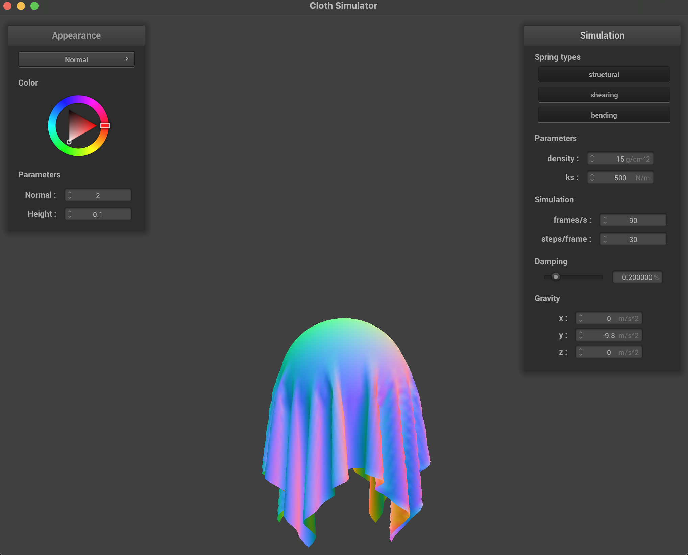
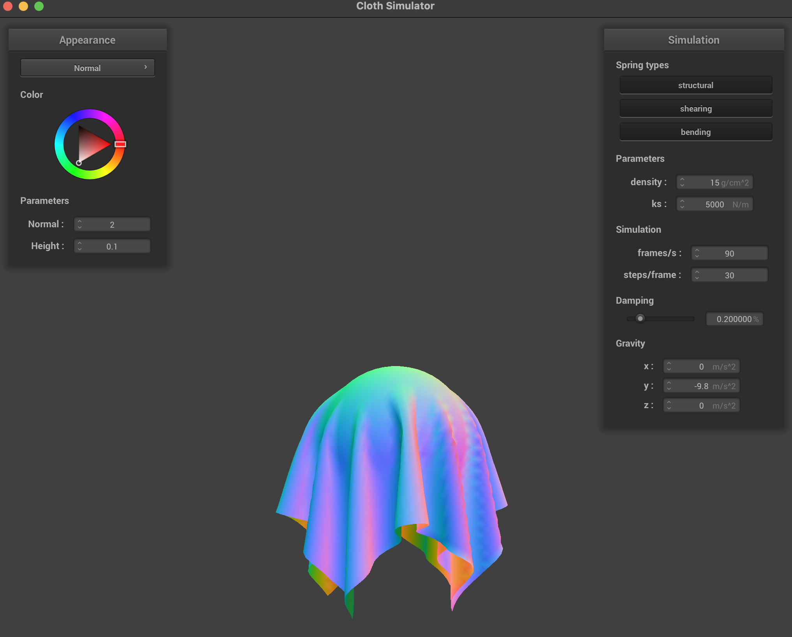
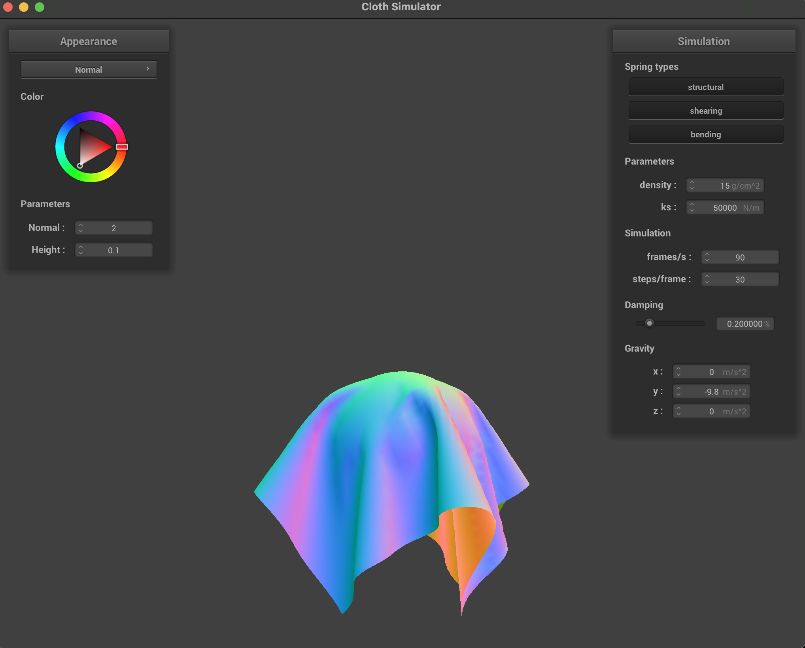
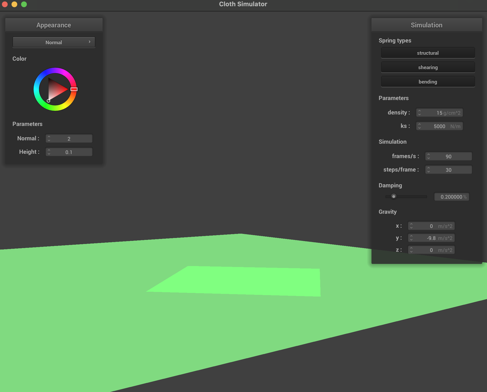

CS184/284A Spring 2025 Homework 4 Write-Up
Link to webpage: https://cal-cs184-student.github.io/hw-webpages-amuthepotato/hw4/index.html
Link to GitHub repository: https://github.com/cal-cs184-student/hw4-clothsim-amupotato-1
Overview
Give a high-level overview of what you implemented in this homework. Think about what you've built as a whole. Share your thoughts on what interesting things you've learned from completing the homework.Part 1: Masses and springs
This part of the assignment asked us to implement a basic cloth simulation model using a grid of point masses connected by springs. We started by constructing a uniformly spaced grid of point masses based on the cloth’s width, height, and resolution, making sure to store them in row-major order. Depending on whether the cloth is oriented horizontally or vertically, we assigned positions in either the xz-plane or xy-plane (with a slight random offset in the z-direction for vertical cloth). We also marked certain masses as pinned according to the provided pinned indices. After creating all the point masses, we then established spring connections between them to enforce structural, shearing, and bending constraints. These springs connect neighboring masses in specific patterns (adjacent, diagonal, and two units apart) and are stored for use in the simulation. Finally, we verifyed our implementation visually by rendering the cloth and toggling different constraint types to ensure the correct springs are being applied.


Part 2: Simulation via numerical integration
In this part, we extended the cloth model by simulating its motion over time using physical forces and numerical integration. We computed the total forces acting on each point mass by combining external forces (like gravity) with spring forces derived from Hooke’s Law, accounting for structural, shearing, and bending constraints. Using these forces, we updated each point mass’s position via Verlet integration, which estimates motion based on current and previous positions while incorporating a damping factor to simulate energy loss. Finally, we enforced deformation constraints to prevent springs from stretching beyond a reasonable limit, ensuring the cloth behaves in a stable and realistic manner during simulation.Spring Constant
The spring constant ks controls how stiff the cloth is by determining how strongly the springs resist deformation. With a very low ks, the cloth behaves loosely and appears extremely flexible, often stretching significantly and sagging under gravity before slowly settling into a shape with exaggerated deformations. In contrast, a high ks makes the cloth much stiffer, causing it to better preserve its original shape and resist stretching. As a result, the cloth falls more rigidly and reaches a stable configuration more quickly, with minimal visible deformation between neighboring point masses.

Density
Density affects the mass of each point mass in the cloth, which in turn influences how the cloth responds to forces like gravity. With a higher density, the cloth becomes heavier, causing it to fall more quickly and stretch the springs more due to the increased force. This can lead to more pronounced sagging and tension in the cloth before it stabilizes. Conversely, a lower density results in a lighter cloth that falls more slowly and exhibits less dramatic stretching, often appearing more delicate and responsive to smaller forces.

Damping
Damping controls how much energy is lost over time in the simulation, effectively reducing the cloth’s motion as it evolves. With low damping, the cloth retains more of its kinetic energy, leading to prolonged oscillations and visible bouncing before coming to rest. In the screenshot, the cloth is still in motion. With high damping, motion is quickly reduced, and the cloth settles into its final position much faster with minimal oscillation. However, excessive damping can make the cloth appear unnaturally sluggish or overdamped, removing realistic secondary motion.


Part 3: Handling collisions with other objects
To handle collisions with spheres, we implemented a method that checks whether a point mass lies inside or intersects the sphere by comparing its distance from the sphere’s center to the sphere’s radius. If the point mass is inside the sphere, we computed the direction vector from the sphere’s origin to the point mass and normalized it to find the point on the sphere’s surface where the mass should lie (the tangent point). We then calculated a correction vector from the point mass’s previous position (last_position) to this tangent point. The point mass’s position is updated by applying this correction, scaled by a factor of (1−f) to account for friction. This ensures that the cloth doesn't penetrate the sphere and instead slides naturally along its surface while losing some energy due to friction. Additionally, we updated the simulation loop to check every point mass against all collision objects in the scene at each time step.For plane collisions, we implemented a method to detect whether a point mass crosses the plane between time steps by checking if its current position lies on a different side of the plane than its previous position. When such a crossing is detected, we computed the tangent point where the point mass would have intersected the plane along its trajectory. We then calculated a correction vector that moves the point mass back to a position slightly above the plane, using a small offset (SURFACE_OFFSET) to prevent numerical instability or repeated collisions. This correction is applied to the point mass’s previous position and scaled by (1−f) to incorporate friction. As a result, the cloth settles naturally on the plane surface without clipping through it, and friction helps dampen its motion over time.
When simulating the cloth draping over a sphere, the spring constant ks significantly affects how the cloth conforms to the surface. With a low ks value such as 500, the cloth is very flexible and stretches easily, causing it to drape closely over the sphere with pronounced sagging and deeper folds. At the default ks = 5000, the cloth strikes a balance between flexibility and stiffness, producing realistic folds while still maintaining some structural integrity. With a high ks value such as 50000, the cloth becomes much stiffer and resists deformation, resulting in a looser fit over the sphere with fewer and less pronounced folds. Instead of wrapping tightly around the sphere, the cloth maintains a more rigid shape.



